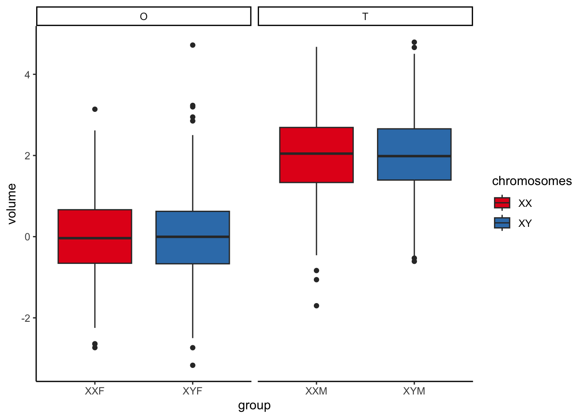
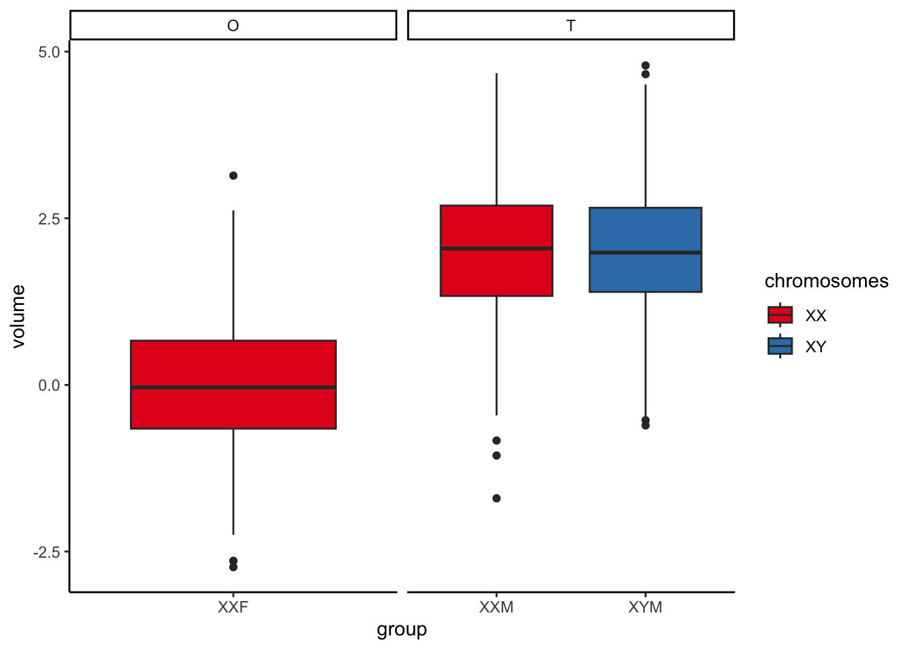
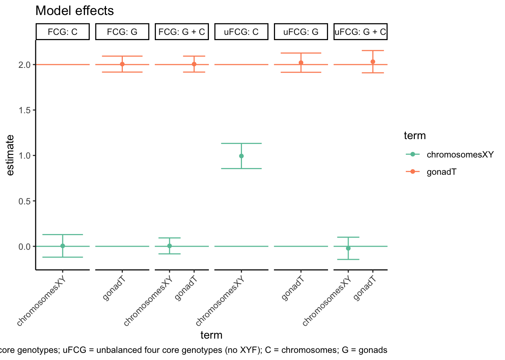
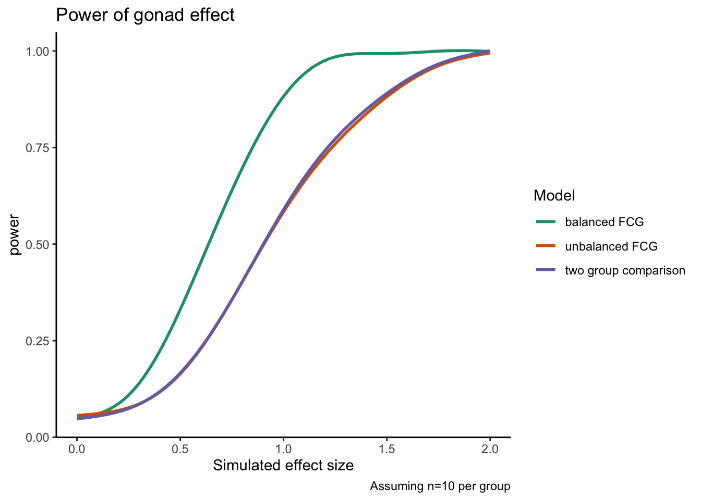
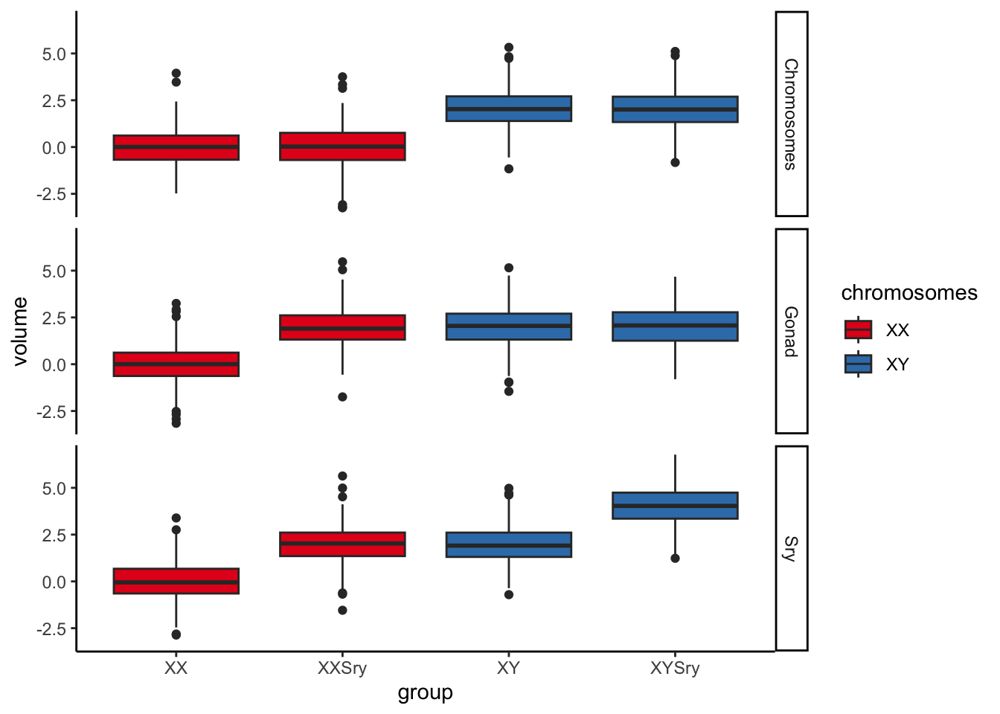
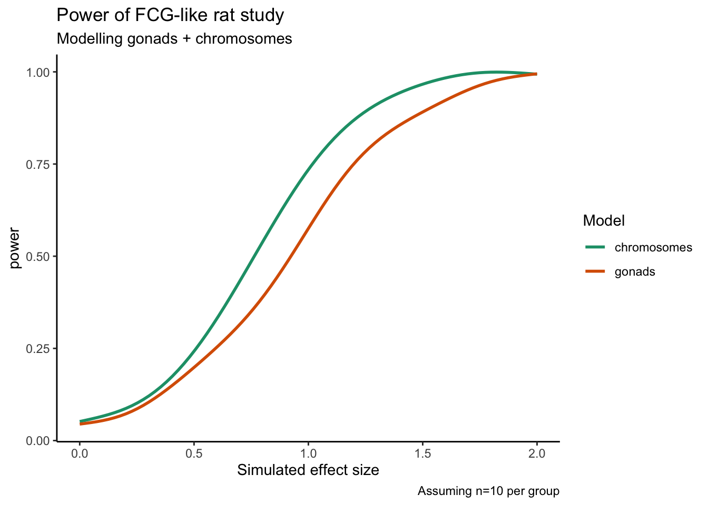
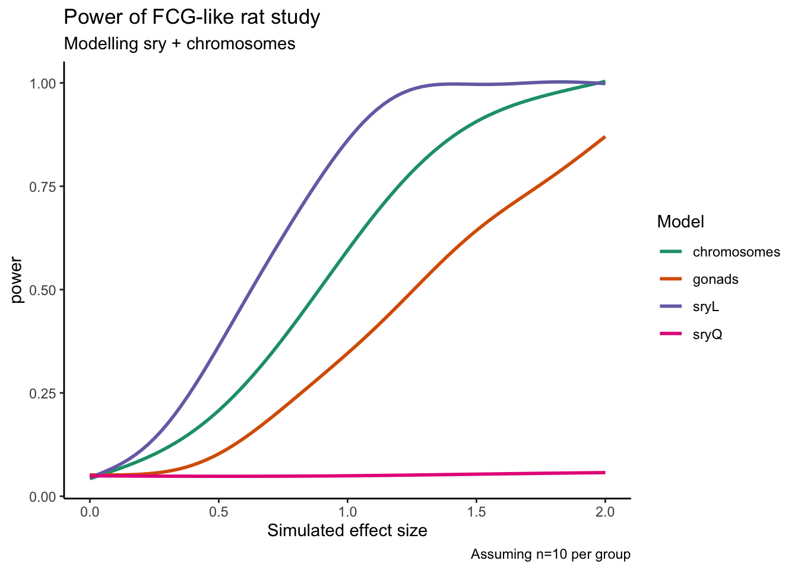

Show the code
library(tidyverse)
library(ggplot2)
library(broom)Jason Lerch and Kamila Szulc-Lerch
February 8, 2025
This came out of a discussion related to a rat model designed to explore the same question at the Four Core Genotype mouse model: what happens if you don’t have all four arms? Are you hopelessly confounded? The short answer is no under some assumptions. We’ll explore that with some simple simulations.
To start with we’ll create a function to simulate the four core genotype model and then drop one of the arms.
generateFCGData <- function(
XXM = 0,
XXF = 0,
XYM = 0,
XYF = 0,
std = 1,
ngroup=10) {
rbind(
data.frame(group="XXM", gonad="T", chromosomes="XX",
volume = rnorm(ngroup, XXM, sd=std)),
data.frame(group="XXF", gonad="O", chromosomes="XX",
volume = rnorm(ngroup, XXF, sd=std)),
data.frame(group="XYM", gonad="T", chromosomes="XY",
volume = rnorm(ngroup, XYM, sd=std)),
data.frame(group="XYF", gonad="O", chromosomes="XY",
volume = rnorm(ngroup, XYF, sd=std))
)
}Let’s assume that having male gonads increases the output variable by 2 standard deviations. That would look as follows:

Let’s run the stats three ways, first separately fitting gonads and chromosomes and then using an additive model incorporating both chromosomes and gonads:
Call:
lm(formula = volume ~ gonad, data = ddd)
Residuals:
Min 1Q Median 3Q Max
-3.7454 -0.6958 -0.0124 0.6561 3.9788
Coefficients:
Estimate Std. Error t value Pr(>|t|)
(Intercept) 0.007366 0.031183 0.236 0.813
gonadT 1.975542 0.044100 44.797 <2e-16 ***
---
Signif. codes: 0 '***' 0.001 '**' 0.01 '*' 0.05 '.' 0.1 ' ' 1
Residual standard error: 0.9861 on 1998 degrees of freedom
Multiple R-squared: 0.5011, Adjusted R-squared: 0.5008
F-statistic: 2007 on 1 and 1998 DF, p-value: < 2.2e-16
Call:
lm(formula = volume ~ chromosomes, data = ddd)
Residuals:
Min 1Q Median 3Q Max
-4.2282 -1.0332 0.0045 1.0425 4.9794
Coefficients:
Estimate Std. Error t value Pr(>|t|)
(Intercept) 1.00793 0.04415 22.83 <2e-16 ***
chromosomesXY -0.02559 0.06243 -0.41 0.682
---
Signif. codes: 0 '***' 0.001 '**' 0.01 '*' 0.05 '.' 0.1 ' ' 1
Residual standard error: 1.396 on 1998 degrees of freedom
Multiple R-squared: 8.408e-05, Adjusted R-squared: -0.0004164
F-statistic: 0.168 on 1 and 1998 DF, p-value: 0.6819
Call:
lm(formula = volume ~ gonad + chromosomes, data = ddd)
Residuals:
Min 1Q Median 3Q Max
-3.7326 -0.6905 -0.0081 0.6563 3.9916
Coefficients:
Estimate Std. Error t value Pr(>|t|)
(Intercept) 0.02016 0.03820 0.528 0.598
gonadT 1.97554 0.04411 44.790 <2e-16 ***
chromosomesXY -0.02559 0.04411 -0.580 0.562
---
Signif. codes: 0 '***' 0.001 '**' 0.01 '*' 0.05 '.' 0.1 ' ' 1
Residual standard error: 0.9863 on 1997 degrees of freedom
Multiple R-squared: 0.5012, Adjusted R-squared: 0.5007
F-statistic: 1003 on 2 and 1997 DF, p-value: < 2.2e-16The output here is correct - no matter how analyzed, the statistics tell us that having testes increases the output by 2 (everything is in units of standard deviation here), and there is no effect of chromosomes.
Let’s now drop one of the arms, and assume that rather than having all four groups we do not have the XY female group. The exact same data would look like this:

And we run the same statistics:
Call:
lm(formula = volume ~ gonad, data = ddd)
Residuals:
Min 1Q Median 3Q Max
-3.7454 -0.6740 -0.0181 0.6457 3.9788
Coefficients:
Estimate Std. Error t value Pr(>|t|)
(Intercept) -0.001365 0.044138 -0.031 0.975
gonadT 1.984273 0.054058 36.706 <2e-16 ***
---
Signif. codes: 0 '***' 0.001 '**' 0.01 '*' 0.05 '.' 0.1 ' ' 1
Residual standard error: 0.987 on 1498 degrees of freedom
Multiple R-squared: 0.4735, Adjusted R-squared: 0.4732
F-statistic: 1347 on 1 and 1498 DF, p-value: < 2.2e-16
Call:
lm(formula = volume ~ chromosomes, data = ddd)
Residuals:
Min 1Q Median 3Q Max
-4.2282 -0.9186 0.0336 0.8992 4.0131
Coefficients:
Estimate Std. Error t value Pr(>|t|)
(Intercept) 1.00793 0.04066 24.79 <2e-16 ***
chromosomesXY 0.94065 0.07043 13.36 <2e-16 ***
---
Signif. codes: 0 '***' 0.001 '**' 0.01 '*' 0.05 '.' 0.1 ' ' 1
Residual standard error: 1.286 on 1498 degrees of freedom
Multiple R-squared: 0.1064, Adjusted R-squared: 0.1058
F-statistic: 178.4 on 1 and 1498 DF, p-value: < 2.2e-16
Call:
lm(formula = volume ~ gonad + chromosomes, data = ddd)
Residuals:
Min 1Q Median 3Q Max
-3.7111 -0.6767 -0.0226 0.6470 4.0131
Coefficients:
Estimate Std. Error t value Pr(>|t|)
(Intercept) -0.001365 0.044135 -0.031 0.975
gonadT 2.018595 0.062416 32.341 <2e-16 ***
chromosomesXY -0.068643 0.062416 -1.100 0.272
---
Signif. codes: 0 '***' 0.001 '**' 0.01 '*' 0.05 '.' 0.1 ' ' 1
Residual standard error: 0.9869 on 1497 degrees of freedom
Multiple R-squared: 0.474, Adjusted R-squared: 0.4733
F-statistic: 674.4 on 2 and 1497 DF, p-value: < 2.2e-16Losing one arm of the study means that the design is now unbalanced. Looking at the three different stats models shows that modelling only gonads gives the correct answer of a 2 SD increase, but modelling only chromosomes gives an incorrect answer of an increase of 1SD when having XY chromosomes. What saves us is covarying - modelling gonads + chromosomes again returns the correct answer, since the model simultaneously estimates the effects of gonads and chromosomes while controlling for the other.
Let’s show that graphically:
allStats <- rbind(
tidy(lfg, conf.int = T) %>% mutate(model = "FCG: G"),
tidy(lfc, conf.int = T) %>% mutate(model = "FCG: C"),
tidy(lfgc, conf.int = T) %>% mutate(model = "FCG: G + C"),
tidy(lrg, conf.int = T) %>% mutate(model = "uFCG: G"),
tidy(lrc, conf.int = T) %>% mutate(model = "uFCG: C"),
tidy(lrgc, conf.int = T) %>% mutate(model = "uFCG: G + C")
) %>% filter(term != "(Intercept)")
cols <- RColorBrewer::brewer.pal(2, "Set2")Warning in RColorBrewer::brewer.pal(2, "Set2"): minimal value for n is 3, returning requested palette with 3 different levelsallStats %>%
ggplot() +
aes(x=term, y=estimate, colour=term) +
geom_point() +
geom_errorbar(aes(ymin=conf.low, ymax=conf.high)) +
facet_wrap(.~model, scale="free_x", nrow=1) +
theme_classic() +
theme(axis.text.x = element_text(angle=45, hjust=1)) +
scale_color_manual(values = cols[1:2]) +
geom_hline(yintercept = 2, color=cols[2]) +
geom_hline(yintercept = 0, color=cols[1]) +
labs(title="Model effects", caption="FCG = balanced four core genotypes; uFCG = unbalanced four core genotypes (no XYF); C = chromosomes; G = gonads") 
Now, can’t we just do a simple t-test comparing two groups with the desired contrasts which avoids the issue of more complex modelling? Yes, that works:
Call:
lm(formula = volume ~ group, data = ddd %>% filter(group %in%
c("XXF", "XXM")))
Residuals:
Min 1Q Median 3Q Max
-3.2189 -0.6489 -0.0309 0.6375 3.2199
Coefficients:
Estimate Std. Error t value Pr(>|t|)
(Intercept) -0.001365 0.044331 -0.031 0.975
groupXXM 2.018595 0.062694 32.198 <2e-16 ***
---
Signif. codes: 0 '***' 0.001 '**' 0.01 '*' 0.05 '.' 0.1 ' ' 1
Residual standard error: 0.9913 on 998 degrees of freedom
Multiple R-squared: 0.5095, Adjusted R-squared: 0.509
F-statistic: 1037 on 1 and 998 DF, p-value: < 2.2e-16But do we pay a price in statistical power? Let’s compare the simple two group comparison to the linear model with all three groups (in the unbalanced FCG case) estimating both a gonad and a chromosome effect.
simNtimes <- function(nsims=100, effectSize=2, ngroup=20) {
bFCG <- map(1:nsims, ~ generateFCGData(XYM=effectSize,
XXM=effectSize,
ngroup=ngroup))
uFCG <- map(bFCG, ~ .x %>% filter(group!="XYF"))
tgroup <- map(bFCG, ~ .x %>% filter(group %in% c("XXF", "XXM")))
lbFCG <- map(bFCG, ~ lm(volume ~ gonad + chromosomes, data=.x))
luFCG <- map(uFCG, ~ lm(volume ~ gonad + chromosomes, data=.x))
ltgroup <- map(tgroup, ~ lm(volume ~ group, data=.x))
tlbFCG <- map(lbFCG, tidy)
tluFCG <- map(luFCG, tidy)
tltgroup <- map(ltgroup, tidy)
data.frame(
bFCG = map_dbl(tlbFCG, ~.x %>% filter(term == "gonadT") %>% pull(p.value)),
uFCG = map_dbl(tluFCG, ~.x %>% filter(term == "gonadT") %>% pull(p.value)),
twogroup = map_dbl(tltgroup, ~.x %>% filter(term == "groupXXM") %>% pull(p.value))
)
}
allSims <- map(seq(0, 2, by=0.1), ~ simNtimes(nsims=200, effectSize=.x, ngroup = 10) %>% mutate(d=.x))
powerDF <- map_dfr(allSims, ~ .x) %>% group_by(d) %>% summarise_at(vars(bFCG:twogroup), function(x) mean(x<0.05))
powerDF %>%
pivot_longer(bFCG:twogroup, values_to = "power") %>%
ggplot() + aes(x=d, y=power, colour=name) +
geom_smooth(method="gam", formula=y~s(x, k=8), se=F) +
scale_color_brewer("Model", palette = "Dark2",
label=c("balanced FCG",
"unbalanced FCG",
"two group comparison")) +
theme_classic() +
xlab("Simulated effect size") +
labs(title="Power of gonad effect", caption ="Assuming n=10 per group")
Not really - this shows the power we lose when moving from a balanced FCG dataset to the unbalanced one missing one group. But the power is the same between the two ways of modelling the unbalanced dataset, indicating that in the case of the unbalanced design (i.e. only having three rather than all four groups of the FCG model) the gonad and chromosome terms of the statistical model essentially reduce down to a two-group comparison.
Let’s expand this to the FCG-like rat model (male arm only for now). There are four genotypes:
| Genotype | Gonads | Sex Chromosomes | Sry |
|---|---|---|---|
| XX | Ovaries | XX | None |
| XX-Sry | Testes | XX | Transgene |
| XY | Testes | XY | WT |
| XY-Sry | Testes | XY | WT + Transgene |
Once again we need a function to simulate from this dataset
generateFCGRatData <- function(
XX = 0,
XXSry = 0,
XY = 0,
XYSry = 0,
std = 1,
ngroup=10) {
rbind(
data.frame(group="XX", gonad="O", chromosomes="XX", sry=0,
volume = rnorm(ngroup, XX, sd=std)),
data.frame(group="XXSry", gonad="T", chromosomes="XX", sry=1,
volume = rnorm(ngroup, XXSry, sd=std)),
data.frame(group="XY", gonad="T", chromosomes="XY", sry=1,
volume = rnorm(ngroup, XY, sd=std)),
data.frame(group="XYSry", gonad="T", chromosomes="XY", sry=2,
volume = rnorm(ngroup, XYSry, sd=std))
)
}Let’s see what a few different scenarios look like:
gonads <- generateFCGRatData(XX=0, XXSry=2, XY=2, XYSry=2, ngroup = 500) %>%
mutate(contrast = "Gonad")
chrom <- generateFCGRatData(XX=0, XXSry=0, XY=2, XYSry=2, ngroup = 500) %>%
mutate(contrast = "Chromosomes")
sry <- generateFCGRatData(XX=0, XXSry=2, XY=2, XYSry=4, ngroup = 500) %>%
mutate(contrast = "Sry")
rbind(gonads, chrom, sry) %>%
ggplot() +
aes(x=group, y=volume, fill=chromosomes) +
geom_boxplot() +
facet_wrap(~gonad, scales="free_x") +
scale_fill_brewer(palette = "Set1") +
facet_grid(contrast ~ .) +
theme_classic()
Can we appropriately detect the right effects in those models, focusing first on analyzing gonads and chromosomes?
Call:
lm(formula = volume ~ gonad + chromosomes, data = gonads)
Residuals:
Min 1Q Median 3Q Max
-3.8756 -0.6872 0.0102 0.7343 3.1346
Coefficients:
Estimate Std. Error t value Pr(>|t|)
(Intercept) -0.08300 0.04609 -1.801 0.0719 .
gonadT 2.01885 0.06518 30.973 <2e-16 ***
chromosomesXY 0.02316 0.05645 0.410 0.6816
---
Signif. codes: 0 '***' 0.001 '**' 0.01 '*' 0.05 '.' 0.1 ' ' 1
Residual standard error: 1.031 on 1997 degrees of freedom
Multiple R-squared: 0.4225, Adjusted R-squared: 0.422
F-statistic: 730.6 on 2 and 1997 DF, p-value: < 2.2e-16
Call:
lm(formula = volume ~ gonad + chromosomes, data = chrom)
Residuals:
Min 1Q Median 3Q Max
-3.4137 -0.6712 0.0006 0.6486 3.3420
Coefficients:
Estimate Std. Error t value Pr(>|t|)
(Intercept) 0.01415 0.04415 0.321 0.749
gonadT -0.02937 0.06244 -0.470 0.638
chromosomesXY 1.99849 0.05407 36.958 <2e-16 ***
---
Signif. codes: 0 '***' 0.001 '**' 0.01 '*' 0.05 '.' 0.1 ' ' 1
Residual standard error: 0.9873 on 1997 degrees of freedom
Multiple R-squared: 0.5027, Adjusted R-squared: 0.5023
F-statistic: 1010 on 2 and 1997 DF, p-value: < 2.2e-16Yes. What about treating sry as an ordered factor (i.e. assuming that a dose of 2 is more than a dose of 1, but not assuming that it is purely linear).
Call:
lm(formula = volume ~ sry + chromosomes, data = gonads %>% mutate(sry = as.ordered(sry)))
Residuals:
Min 1Q Median 3Q Max
-3.8941 -0.6866 0.0108 0.7368 3.1346
Coefficients:
Estimate Std. Error t value Pr(>|t|)
(Intercept) 1.27522 0.04065 31.367 <2e-16 ***
sry.L 1.45367 0.06519 22.298 <2e-16 ***
sry.Q -0.80910 0.03764 -21.496 <2e-16 ***
chromosomesXY 0.00468 0.06519 0.072 0.943
---
Signif. codes: 0 '***' 0.001 '**' 0.01 '*' 0.05 '.' 0.1 ' ' 1
Residual standard error: 1.031 on 1996 degrees of freedom
Multiple R-squared: 0.4226, Adjusted R-squared: 0.4218
F-statistic: 487 on 3 and 1996 DF, p-value: < 2.2e-16
Call:
lm(formula = volume ~ sry + chromosomes, data = chrom %>% mutate(sry = as.ordered(sry)))
Residuals:
Min 1Q Median 3Q Max
-3.4013 -0.6672 -0.0009 0.6498 3.3296
Coefficients:
Estimate Std. Error t value Pr(>|t|)
(Intercept) -0.013689 0.038946 -0.351 0.725
sry.L -0.038291 0.062453 -0.613 0.540
sry.Q 0.001874 0.036057 0.052 0.959
chromosomesXY 2.010883 0.062453 32.198 <2e-16 ***
---
Signif. codes: 0 '***' 0.001 '**' 0.01 '*' 0.05 '.' 0.1 ' ' 1
Residual standard error: 0.9875 on 1996 degrees of freedom
Multiple R-squared: 0.5028, Adjusted R-squared: 0.502
F-statistic: 672.8 on 3 and 1996 DF, p-value: < 2.2e-16
Call:
lm(formula = volume ~ sry + chromosomes, data = sry %>% mutate(sry = as.ordered(sry)))
Residuals:
Min 1Q Median 3Q Max
-3.1755 -0.6923 -0.0411 0.6464 3.1876
Coefficients:
Estimate Std. Error t value Pr(>|t|)
(Intercept) 2.05109 0.03977 51.569 <2e-16 ***
sry.L 2.94565 0.06378 46.185 <2e-16 ***
sry.Q -0.01815 0.03682 -0.493 0.622
chromosomesXY -0.03225 0.06378 -0.506 0.613
---
Signif. codes: 0 '***' 0.001 '**' 0.01 '*' 0.05 '.' 0.1 ' ' 1
Residual standard error: 1.008 on 1996 degrees of freedom
Multiple R-squared: 0.6779, Adjusted R-squared: 0.6774
F-statistic: 1400 on 3 and 1996 DF, p-value: < 2.2e-16Still works but is a bit more unstable. Some interpretation aids to these models - when treating sry as an ordered factor, there are two possible trends - a linear trends, indicating that with every increase in sry there is an increase in the outcome, and a quadratic trend, indicating that going from 1 to 2 is not the same as going from 0 to 1. So in our third model where we artificially simulated an increase with every dose of sry there is a linear increase (sry.L), but no quadratic increase (sry.Q is non-significant). But in the gonad model there is both a linear and a quadratic effect, since having 2 sry copies (WT + transgene) has the same effect as having one sry copy.
What about power? First just looking at the gonads + chromosomes model:
simRatNtimes <- function(nsims=100, effectSize=2, ngroup=20) {
ratG <- map(1:nsims, ~ generateFCGRatData(XX=0,
XXSry=effectSize,
XY=effectSize,
XYSry=effectSize,
ngroup=ngroup))
ratC <- map(1:nsims, ~ generateFCGRatData(XX=0,
XXSry=0,
XY=effectSize,
XYSry=effectSize,
ngroup=ngroup))
lratG <- map(ratG, ~ lm(volume ~ gonad + chromosomes, data=.x))
lratC <- map(ratC, ~ lm(volume ~ gonad + chromosomes, data=.x))
tlratG <- map(lratG, tidy)
tlratC <- map(lratC, tidy)
data.frame(
gonads = map_dbl(tlratG, ~.x %>% filter(term == "gonadT") %>% pull(p.value)),
chromosomes = map_dbl(tlratC, ~.x %>% filter(term == "chromosomesXY") %>% pull(p.value))
)
}
allRatSims <- map(seq(0, 2, by=0.1), ~ simRatNtimes(nsims=200, effectSize=.x, ngroup = 10) %>% mutate(d=.x))
powerDF <- map_dfr(allRatSims, ~ .x) %>% group_by(d) %>% summarise_at(vars(gonads:chromosomes), function(x) mean(x<0.05))
powerDF %>%
pivot_longer(gonads:chromosomes, values_to = "power") %>%
ggplot() + aes(x=d, y=power, colour=name) +
geom_smooth(method="gam", formula=y~s(x, k=8), se=F) +
scale_color_brewer("Model", palette = "Dark2") +
theme_classic() +
xlab("Simulated effect size") +
labs(title="Power of FCG-like rat study",
subtitle="Modelling gonads + chromosomes",
caption ="Assuming n=10 per group")
Given the unbalanced design for gonads there is some power differential, in that it is easier to detect a chromosome effect than a gonad effect.
And if we model sry as an ordered factor?
simRatNtimesOF <- function(nsims=100, effectSize=2, ngroup=20) {
ratG <- map(1:nsims, ~ generateFCGRatData(XX=0,
XXSry=effectSize,
XY=effectSize,
XYSry=effectSize,
ngroup=ngroup) %>%
mutate(sry = as.ordered(sry)))
ratC <- map(1:nsims, ~ generateFCGRatData(XX=0,
XXSry=0,
XY=effectSize,
XYSry=effectSize,
ngroup=ngroup) %>%
mutate(sry = as.ordered(sry)))
ratS <- map(1:nsims, ~ generateFCGRatData(XX=0,
XXSry=effectSize,
XY=effectSize,
XYSry=effectSize*2,
ngroup=ngroup) %>%
mutate(sry = as.ordered(sry)))
lratG <- map(ratG, ~ lm(volume ~ sry + chromosomes, data=.x))
lratC <- map(ratC, ~ lm(volume ~ sry + chromosomes, data=.x))
lratS <- map(ratS, ~ lm(volume ~ sry + chromosomes, data=.x))
tlratG <- map(lratG, tidy)
tlratC <- map(lratC, tidy)
tlratS <- map(lratS, tidy)
data.frame(
gonads = map_dbl(tlratG, ~.x %>% filter(term == "sry.L") %>% pull(p.value)),
chromosomes = map_dbl(tlratC, ~.x %>% filter(term == "chromosomesXY") %>% pull(p.value)),
sryL = map_dbl(tlratS, ~.x %>% filter(term == "sry.L") %>% pull(p.value)),
sryQ = map_dbl(tlratS, ~.x %>% filter(term == "sry.Q") %>% pull(p.value))
)
}
allRatSims <- map(seq(0, 2, by=0.1), ~ simRatNtimesOF(nsims=200, effectSize=.x, ngroup = 10) %>% mutate(d=.x))
powerDF <- map_dfr(allRatSims, ~ .x) %>% group_by(d) %>% summarise_at(vars(gonads:sryQ), function(x) mean(x<0.05))
powerDF %>%
pivot_longer(gonads:sryQ, values_to = "power") %>%
ggplot() + aes(x=d, y=power, colour=name) +
geom_smooth(method="gam", formula=y~s(x, k=8), se=F) +
scale_color_brewer("Model", palette = "Dark2") +
theme_classic() +
xlab("Simulated effect size") +
labs(title="Power of FCG-like rat study",
subtitle="Modelling sry + chromosomes",
caption ="Assuming n=10 per group")
Here the gonads model looks at the linear part of the sry term when there is a change in the presence of sry but no dosage effect. sryL looks at the linear term when there is a dosage effect, which is now the most powered term (since there are three possible steps), and sryQ looks at the quadratic effect when there is a simulated dosage effect which is rightly 0.